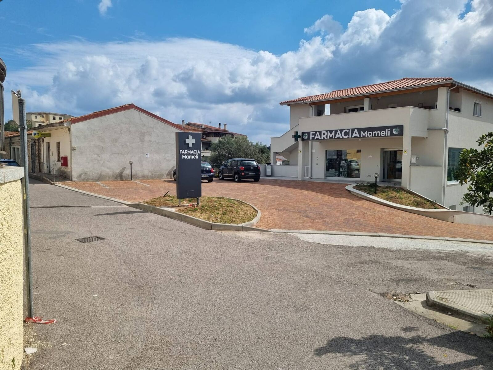

Prestazioni infermieristiche in farmacia
Farmacia Mameli
Via Cuccheddu 5 – Loiri
Farmaci, consulenza e servizi per la salute: medicazioni, terapie, analisi, ECG e holter, a pochi passi da casa.

Servizi e attività ambulatoriali
Per informazioni e prenotazioni rivolgiti al banco o contattaci.
Prestazioni infermieristiche
- Medicazioni semplici e rimozione punti
- Medicazione accessi vascolari
- Medicazione lesioni da pressione, vascolari e traumatiche
- Terapie intramuscolari e sottocutanee
- Posizionamento e mantenimento cateteri vescicali
- Enteroclismi
Analisi e altri servizi
- Vaccinazioni
- Misurazione glicemia ed emoglobina glicata
- Analisi colesterolemia
- ECG, holter cardiaco e pressorio
- Noleggio ausili sanitari
- Osteopata / chinesiologo
La farmacia
Ambienti nuovi, luminosi e accessibili, con parcheggio davanti all'ingresso.


Contatti
Indirizzo
Via Cuccheddu 5, 07020 Loiri Porto San Paolo (SS)
Telefono
329 744 7520
Facebook
Farmacia Mameli s.a.s.
Orari
| Lunedì – Sabato | 9:00 – 13:00 · 16:30 – 19:30 |
|---|---|
| Domenica | Chiuso |
Fuori orario consulta le farmacie di turno.